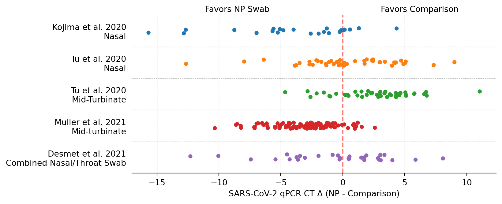
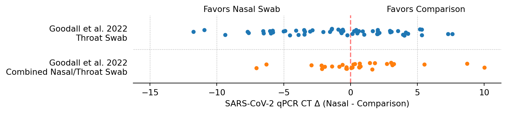
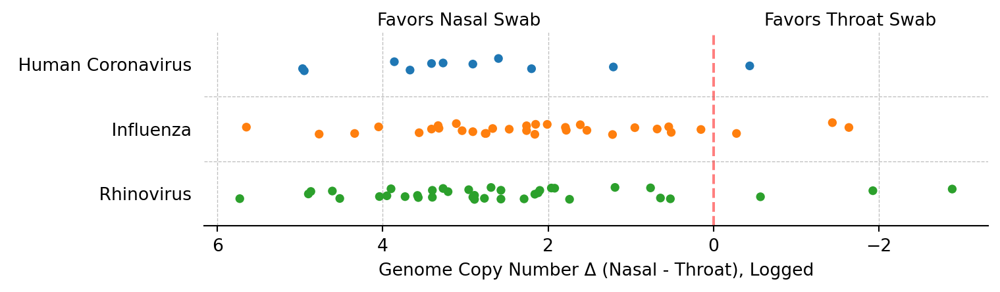
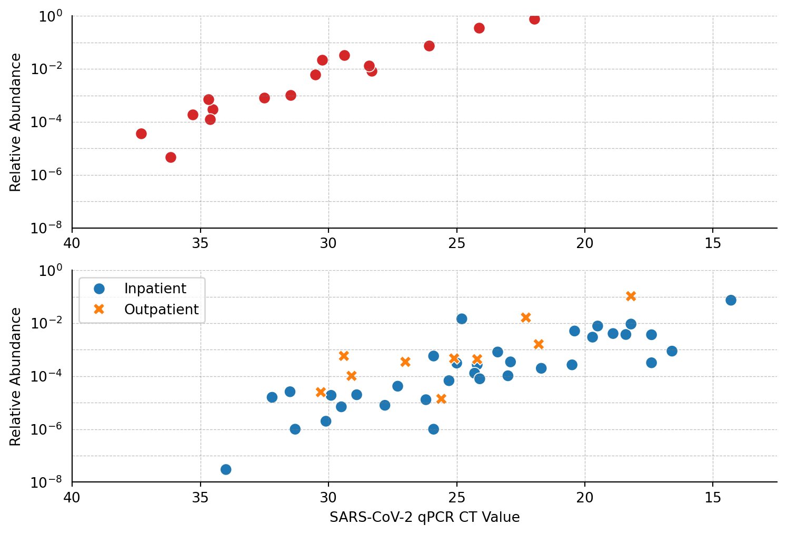
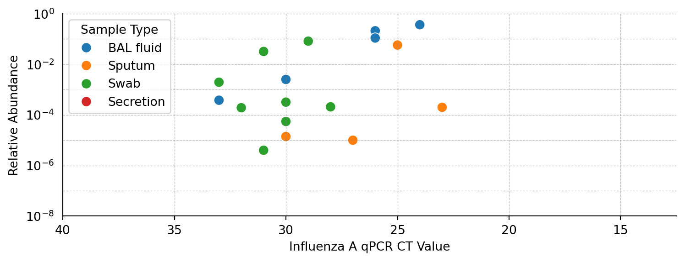

Code
# Importing packages
import seaborn as sns
import pandas as pd
import matplotlib.pyplot as plt
import numpy as np
from collections import defaultdict
import random
import mathSimon Grimm
February 23, 2024
The NAO aims to detect stealth pathogens at an early stage. Up until, we have have focused much our research on wastewater treatment plant (WTP) samples. While WTP sampling offers some advantages, its limitations include environmental noise, non-human biological material, and low pathogen abundance. The NAO thus also wants to investigate other sampling approaches. To this end we’ve previously researched the promise of air sampling for pathogen early detection, and Will recently created a framework that allows analysis of various types of sampling strategies.
One promising approach is sampling using nasal, nasopharyngeal (NP), or oropharyngeal (OP) swabs. When pooled, these samples have several advantages
Still, the approach also has downsides:
Among many types of pathogens, respiratory pathogens are particularly likely to cause future pandemics (Amesh A. Adalja, MD, Matthew Watson, …). Though different pathogens have different tropism across tissues (SARS-CoV-2 having a wider wider tropism than influenza (Flerlage et al. 2021)), all of them are respiratory pathogens and thus shed in the respiratory tract, which includes the pharynx, mouth, and nose.
In a swab sampling program we could use different swabs that target any of these sitesm, i.e., the nostrils, the nasopharynx, oropharynx, and the mid-turbinate region1. These sites differ in their comfort of sampling and (probably) in their sensitivity. For instance, nasopharyngeal swabs (NP swabs) would have be far better than other swabs for us to consider them for a sampling program, given that they do not allow self-sampling.
We will evaluate the performance of different swab types in three ways:
(Tsang et al. 2021) performed a meta-analysis to evaluate the ability of different swab types in detecting SARS-CoV-2 using qPCR. Swab types included nasal swabs (n=1622), throat swabs (n=388), and pooled nasal and throat swabs (n=719), each of which were compared to nasopharyngeal swabs. Overall, pooled nasal/throat swabs have the best diagnostic performance with sensitivity of 0.97 (0.93-1.00).
| Sample Type | Sensitivity | Specificity | Positive Predictive Value | Negative Predictive Value |
|---|---|---|---|---|
| Nasal swabs (n=1622) | 0.86 (0.77-0.93) | 0.99 (0.96-1.00) | 0.96 (0.87-1.00) | 0.95 (0.88-0.99) |
| Throat swabs (n=388) | 0.68 (0-35-0.94) | 0.97 (0.95-0.99) | 0.75 (0.45-0.96) | 0.96 (0.94-0.98) |
| Pooled nasal/throat swabs (n=719) | 0.97 (0.93-1.00) | 0.99 (0.98-1.00) | 0.97 (0.90-1.00) | 0.99 (0.98-1.00) |
Note, though Tsang et al. 2021 reports specificity, this metric isn’t very useful in this context. All studies covered by the review used qPCR to detect SARS-CoV-2. qPCR is generally considered to be very sensitive and specific. Thus, if a patient tests positive in a throat swab qPCR, but negative in nasopharyngeal swab qPCR, this shouldn’t be counted against throat swabs (false positive), but rather against nasopharyngeal swabs.
The review above gives us binary information about SARS-CoV-2 being present in different swab types. But we are not merely interested in a pathogen being present in a sample, but how abundant said pathogen is. For instance, hroat swabs coming back negative when NP swabs come back positive tells us that pathogen abundance is likely higher in the nasopharynx, but it’s unclear by how much.
Getting a better understanding of this is particularly relevant when pooling samples because higher relative abundance in an individual positive sample will ensure detection even if said sample is pooled with a large number of negative samples. To quantify this difference in absolute pathogen abundance between sample types we can look beyond positive/negative comparisons and instead look at the differences in CT scores within studies that compared swab types.
Most studies on swab sampling performance treat nasopharyngeal swabs (NP swabs) as the gold standard, against which, nasal (Kojima et al. 2021; Tu et al. 2020), mid-turbinate (Tu et al. 2020; Muller et al. 2021), and combined nasal/oropharyngeal (Desmet et al. 2021) swabs are compared. NP swabs are commonly administered by a healthcare professional and a properly administered test absorbs material from below the inferior turbinate, and the nasopharynx located at the back of the nasal cavity.
The CT value difference for paired NP/{Other} swabs are plotted in Figure 1. The CT value of the comparison swab is subtracted from the NP swab CT value. A lower CT is better, thus, a negative cycle threshold (CT) difference equates to a higher pathogen concentration in the NP swab.
# All CT difference data were calculated in and are taken from https://docs.google.com/spreadsheets/d/1YP4mxT_vxiFwXU5ZuBM4obq_oscfhe05ODWwHFHEznM/
df = pd.read_csv("data/np_ct_differences.tsv", sep="\t", skiprows=1)
df.columns = df.columns.str.replace(", ", "\n")
df = df.melt(var_name="Study & Comparison", value_name="CT Difference")
fig = plt.figure(figsize=(8, 3.5))
sns.stripplot(
data=df,
y="Study & Comparison",
x="CT Difference",
hue="Study & Comparison",
jitter=True,
)
plt.legend([], [], frameon=False)
# drop y axis label
plt.ylabel("")
plt.xlabel("SARS-CoV-2 qPCR CT Δ (NP - Comparison)")
plt.tick_params(axis="y", which="both", left=False, right=False, labelleft=True)
for x in 5, 0, -5, -10, -15:
if x == 0:
plt.axvline(x=x, color="red", linestyle="--", alpha=0.5)
continue
plt.axvline(x=x, color="grey", linestyle="--", alpha=0.5, linewidth=0.5)
for y in 0.5, 1.5, 2.5, 3.5, 4.5:
plt.axhline(y=y, color="grey", linestyle="--", alpha=0.5, linewidth=0.5)
min_x, max_x = plt.xlim()
plt.text(max_x / 2, -0.6, "Favors Comparison", fontsize=10, color="black", ha="center")
plt.text(min_x / 2, -0.6, "Favors NP Swab", fontsize=10, color="black", ha="center")
plt.gca().spines["right"].set_visible(False)
plt.gca().spines["top"].set_visible(False)
plt.gca().spines["left"].set_visible(False)
plt.show()
Apart from self-collected mid-turbinate swabs in Tu et al. 2020, NP swabs show equivalent performance to nasal swabs in Kojima et al. 2020, mid-turbinate swabs in Muller et al. 2021, and combined nasal/throat swabs in Desmet et al 2021; and equivalent performance to nasal swabs in Tu et al. 2020. In the same study, nasal swabs prove equivalent to NP swabs. Combined oro-pharyngeal swabs are also equivalent to NP swabs.
Studies that use NP swabs as their gold standard are useful to better understand the performance of other swab types, but NP swabs themselves are not practical for a large-scale pooled sampling programs: NP swabs are notoriously uncomfortable and are commonly administered by a third person. In contrast, nasal or oropharyngeal swabs would be more suitable for self-sampling, which allows far higher testing throughput. Let’s thus look at studies that compare nasal and oropharyngeal swabs.
Note that the second plot shows the difference in genome copy numbers, rather than CT values2.
df = pd.read_csv("data/nasal_ct_differences.tsv", sep="\t", skiprows=1)
df.columns = df.columns.str.replace(", ", "\n")
# reshape dataframe to long format
df = df.melt(var_name="Study & Comparison", value_name="CT Difference")
fig = plt.figure(figsize=(8, 1.5))
sns.stripplot(
data=df,
y="Study & Comparison",
x="CT Difference",
hue="Study & Comparison",
jitter=True,
)
plt.legend([], [], frameon=False)
# drop y axis label
plt.ylabel("")
plt.xlabel("SARS-CoV-2 qPCR CT Δ (Nasal - Comparison)")
plt.tick_params(axis="y", which="both", left=False, right=False, labelleft=True)
for x in 5, 0, -5, -10, -15:
if x == 0:
plt.axvline(x=x, color="red", linestyle="--", alpha=0.5)
else:
plt.axvline(x=x, color="grey", linestyle="--", alpha=0.5, linewidth=0.5)
plt.axhline(y=0.5, color="grey", linestyle="--", alpha=0.5, linewidth=0.5)
min_x, max_x = plt.xlim()
plt.text(max_x / 2, -0.6, "Favors Comparison", fontsize=10, color="black", ha="center")
plt.text(min_x / 2, -0.6, "Favors Nasal Swab", fontsize=10, color="black", ha="center")
plt.gca().spines["right"].set_visible(False)
plt.gca().spines["top"].set_visible(False)
plt.gca().spines["left"].set_visible(False)
plt.show()
# All CT difference data was calculated and is taken from https://docs.google.com/spreadsheets/d/1YP4mxT_vxiFwXU5ZuBM4obq_oscfhe05ODWwHFHEznM/
# turn tsv into dataframe. Ignore first row. Second row is column names.
df = pd.read_csv("data/leung_genome_copy_differences.tsv", sep="\t", skiprows=1)
df = df.melt(var_name="Study & Comparison", value_name="Genome Copy Number Difference")
df["Study & Comparison"] = df["Study & Comparison"].str.split(",").str[-1]
fig = plt.figure(figsize=(8, 2))
sns.stripplot(
data=df,
y="Study & Comparison",
x="Genome Copy Number Difference",
hue="Study & Comparison",
jitter=True,
)
plt.legend([], [], frameon=False)
# drop y axis label
plt.ylabel("")
plt.xlabel("Genome Copy Number Δ (Nasal - Throat), Logged")
# flip x axis
plt.gca().invert_xaxis()
plt.tick_params(axis="y", which="both", left=False, right=False, labelleft=True)
for x in -2, 0, 2, 4, 6:
if x == 0:
plt.axvline(x=x, color="red", linestyle="--", alpha=0.5)
continue
plt.axvline(x=x, color="grey", linestyle="--", alpha=0.5, linewidth=0.5)
for y in 0.5, 1.5:
plt.axhline(y=y, color="grey", linestyle="--", alpha=0.5, linewidth=0.5)
min_x, max_x = plt.xlim()
plt.text(max_x / 2, -0.6, "Favors Throat Swab", fontsize=10, color="black", ha="center")
plt.text(min_x / 2, -0.6, "Favors Nasal Swab", fontsize=10, color="black", ha="center")
plt.gca().spines["right"].set_visible(False)
plt.gca().spines["top"].set_visible(False)
plt.gca().spines["left"].set_visible(False)
plt.show()
In qPCR measurements, nasal swabs contain more virus copies than throat swabs. In (Goodall et al. 2022), nasal swabs are slightly superior to throat swabs and combined/nasal throat swabs, and come out about even when compared to combined nasal/OP swabs. In (Leung et al. 2020), researchers ran multiplex-PCR on both nasal and throat swamples. qPCR differences are plotted in Figure 3 for Human Coronavirus, Influenza, and Rhinovirus.
Whatever the sample type, ultimately we will want to perform metagenomic sequencing to detect novel pathogens. As described in a previous report, the value of a metagenomic sequencing sample will can be assessed across several dimensions:
The relative abundance of a target pathogen can be impacted by its microbial background, because the sequencing efficiency of a taxon is directly dependant on the sampling efficiency of the other taxa in the sample3
We identified two studies that performed paired metagenomic sequencing and SARS-CoV-2 qPCR on swab samples Lu et al. 2021, Babiker et al. 2020. We’ve reached out to the authors of two further studies that didn’t have publicly available data.
df_throat = pd.read_csv("data/lu_throat_ct_mgs.tsv", sep="\t", skiprows=1)
df_throat.rename(
columns={"SCV-2 Relative Abundance": "scv2_ra", "Ct value": "scv2_ct"}, inplace=True
)
df_nasopharyngeal = pd.read_csv("data/babiker_np_ct_mgs.tsv", sep="\t", skiprows=1)
df_nasopharyngeal.rename(
columns={
"SARS-CoV-2 RT-PCR Ct": "scv2_ct",
"SARS-CoV-2 RA": "scv2_ra",
"Inpatient/ED vs. Outpatient": "patient_status",
},
inplace=True,
)
df_nasopharyngeal["scv2_ct"] = (
df_nasopharyngeal["scv2_ct"].replace(",", ".", regex=True).astype(float)
)
fig, axs = plt.subplots(2, 1, figsize=(9, 6))
for i, (ax, df) in enumerate(zip(axs, [df_throat, df_nasopharyngeal])):
sns_default_colors = sns.color_palette()
# pick 4th and 10th color from palette
x_lim = 12.5, 40
y_lim = 10**-8, 10**0
if i == 1:
sns.scatterplot(
ax=ax,
data=df,
x="scv2_ct",
y="scv2_ra",
hue="patient_status",
style="patient_status",
palette=sns_default_colors,
s=70,
)
ax.legend(title="", loc="upper left")
ax.set_xlabel("SARS-CoV-2 qPCR CT Value")
ax.set_xlim(x_lim)
ax.set_ylim(10**-8, 10**0)
else:
sns.scatterplot(
ax=ax, data=df, x="scv2_ct", y="scv2_ra", color=sns_default_colors[3], s=70
)
ax.set_xlabel("")
ax.set_xlim(x_lim)
ax.set_ylim(y_lim)
ax.set_yscale("log")
ax.invert_xaxis()
ax.spines["right"].set_visible(False)
ax.spines["top"].set_visible(False)
ax.tick_params(axis="y", which="both", left=False, right=False, labelleft=True)
ax.set_ylabel("Relative Abundance")
for x in np.arange(15, 40, 5):
ax.axvline(x=x, color="grey", linestyle="--", alpha=0.5, linewidth=0.5)
for y in range(-7, 1, 1):
log_y = 10**y
ax.axhline(y=log_y, color="grey", linestyle="--", alpha=0.5, linewidth=0.5)
Some observations:
df_influenza = pd.read_csv("data/fischer_influenza_ct_mgs.tsv", sep="\t", skiprows=1)
df_influenza.rename(
columns={"FluA CT": "flua_ct", "Relative Abundance": "flua_mgs"}, inplace=True
)
# drop rows where flua_ct is a string
# print(df_influenza['flua_ct'].unique())
df_influenza["flua_ct"] = df_influenza[df_influenza["flua_ct"] != "Neg"][
"flua_ct"
].astype(int)
fig, ax = plt.subplots(1, 1, figsize=(9, 3))
ax.set_xlim(12.5, 40)
ax.set_ylim(10**-8, 10**0)
sns.scatterplot(
data=df_influenza,
x="flua_ct",
y="flua_mgs",
hue="Sample Type",
color=sns_default_colors,
s=70,
)
ax.set_xlabel("Influenza A qPCR CT Value")
ax.set_ylabel("Relative Abundance")
ax.set_yscale("log")
ax.invert_xaxis()
ax.spines["right"].set_visible(False)
ax.spines["top"].set_visible(False)
ax.tick_params(axis="y", which="both", left=False, right=False, labelleft=True)
for x in np.arange(15, 40, 5):
ax.axvline(x=x, color="grey", linestyle="--", alpha=0.5, linewidth=0.5)
for y in range(-7, 1, 1):
log_y = 10**y
ax.axhline(y=log_y, color="grey", linestyle="--", alpha=0.5, linewidth=0.5)
We can use the above data to replicate research by Jeff Kaufman. Let’s say we get a random set of swabs from a population which contains 1% sick people. On average 1% of all swabs will return positive, and the relative abundance in that positive sample is picked randomly among the relative abundances given in Lu et al. 2021 and Babiker et al. 2020, respectively.
Based on this, the median RA(1%) in a pooled sample with 200 swabs is ~ 10^-4.8 Lu et al. 2021 (throat swabs) and 10^-5.9 in Babiker et al. 2020 (NP swabs)
def simulate_detection(positive_ras):
FRAC_SICK = 0.01
SIMULATIONS = 10000
def probabilistic_round(x):
return int(math.floor(x + random.random()))
def simulate_once(n_swabs):
n_sick = probabilistic_round(FRAC_SICK * n_swabs)
if not n_sick:
return 0
ra = 0
for _ in range(n_sick):
ra = random.choice(positive_ras)
return ra / n_swabs
def simulate_many(n_simulations, n_swabs):
RAs = []
for _ in range(n_simulations):
RAs.append(simulate_once(n_swabs))
RAs.sort()
return [
RAs[probabilistic_round(len(RAs) * percentile / 100)]
for percentile in range(100)
]
data = defaultdict(list)
n_swab_range = [50, 100, 200, 400, 800]
for n_swabs in n_swab_range:
for percentile, ra in enumerate(simulate_many(SIMULATIONS, n_swabs)):
data[percentile].append(ra)
df = pd.DataFrame(data).T
df.columns = n_swab_range
return df
df_throat = pd.read_csv("data/lu_throat_ct_mgs.tsv", sep="\t", skiprows=1)
df_throat.rename(
columns={"SCV-2 Relative Abundance": "scv2_ra", "Ct value": "scv2_ct"}, inplace=True
)
df_nasopharyngeal = pd.read_csv("data/babiker_np_ct_mgs.tsv", sep="\t", skiprows=1)
df_nasopharyngeal.rename(
columns={
"SARS-CoV-2 RT-PCR Ct": "scv2_ct",
"SARS-CoV-2 RA": "scv2_ra",
"Inpatient/ED vs. Outpatient": "patient_status",
},
inplace=True,
)
df_nasopharyngeal["scv2_ct"] = (
df_throat["scv2_ct"].replace(",", ".", regex=True).astype(float)
)
df_throat_ras = df_throat["scv2_ra"].dropna().tolist()
df_nasopharyngeal_ras = df_nasopharyngeal["scv2_ra"].dropna().tolist()
fig, axs = plt.subplots(1, 2, figsize=(9, 5), sharey=True)
n_swab_range = [50, 100, 200, 400, 800]
for i, positive_ras in enumerate([df_throat_ras, df_nasopharyngeal_ras]):
df = simulate_detection(positive_ras)
for n_swabs in n_swab_range:
axs[i].plot(df.index, df[n_swabs], label=f"{n_swabs} swabs")
axs[i].set_xlabel("Percentile")
axs[i].set_ylabel("RA")
axs[i].set_yscale("log")
# turn on y tick labels for both plots
axs[i].yaxis.set_tick_params(labelleft=True)
for x in range(0, 100, 20):
axs[i].axvline(x=x, color="black", linestyle="--", linewidth=0.5, alpha=0.5)
for y in range(-1, -10, -1):
log_y = 10**y
axs[i].axhline(y=log_y, color="black", linestyle="--", linewidth=0.5, alpha=0.5)
if i == 0:
axs[i].set_title("Throat")
else:
axs[i].set_title("Nasopharyngeal")
axs[i].spines["right"].set_visible(False)
axs[i].spines["top"].set_visible(False)
ax.tick_params(axis="x", which="both", bottom=False, top=False, labelbottom=True)
if i == 1:
axs[i].legend()Create a figure for the remaining viruses not covered in Figure 3.
The mid-turbinate region is the area between the nasal opening (Nares) and the nasopharynx.↩︎
A 1-log difference in genome copy number is equivalent to a 3.3 CT difference. This is because each cycle in a qPCR machine approxiately equates to doubling of the genome copy number.↩︎
See McClaren et al. 2019 for further discussion.↩︎